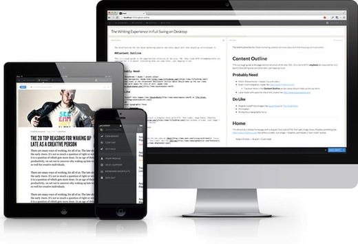

The New Domain Extensions (gTLDs) Are Coming
From Christine Willett – ICANN:
From Christine Willett – ICANN:
There’s something refreshing about blogging on a platform meant for blogging. I mean, platforms like Tumblr and Squarespace provide a nice array of writing tools and readability themes, but if you’re simply looking to blog without distracting bells and whistles, a platform like Silvrback is definitely what you’re looking for.
Now that we’ve gone through setting up and writing on your Tumblr blog (Tumblog), we need to work on making it your own.
So what makes Tumblr one of the most attractive platforms for ADD bloggers (aside from the plethora of posting options) is that the community is quite active and ready to contribute—meaning that there are plenty of themes available, free and paid. Here are a few good sites for finding the one that’s right for you:
So here’s the origin of the problem*. When Twitter launched not that long ago (can you believe it only started in 2006?), they chose to limit posts to 140 characters. For many, that 140 character limit created a perfect environment for short thoughts and conversations, but it was a nightmare for posting links. I mean, just look at a fairly short link like https://iwantmyname.com/blog/. That’s at least a million characters (29).
Quickly, it became very important to keep these links short. Really short. And by 2009, Twitter started using bitly as their link shortener of choice (they’ve since started using t.co for all sites, which doesn’t exactly have a custom ring to it).
For most users, a bitly link looks something like this: bit.ly/xxxxxxx. Basically, it turned any 25+ character link into something around 15. But why would a person or company choose to use bit.ly/xxxxxxx as opposed to something custom. Something branded. For these savvy entities that wanted a branded solution, bitly started offering custom link shortening.
Dear Internet Community,
iwantmyname is looking for a back-end developer to represent 12.5% of our small international company (we’re looking for employee #8). And here’s what we have to offer:
Unlike most web platforms that make you post to a traditional desktop CMS, Tumblr gives users a million options on how and where you can write. Ok, maybe a few dozen. But before we get to the wackier methods, let’s start with the basics—the desktop Tumblr dashboard.
A little backstory here. I, as an active member of the internet, have probably started and killed close to a dozen Tumblr sites. But with new blog platforms coming into existence by the bushel, I haven’t done anything on the platform since the Yahoo! acquisition.
So as an inquisitive soul, this happy jaunt into Tumblrland will probably be as new for me as it is for you. Enjoy!
iwmn: Hi Damian. Thanks so much for chatting with us. First off, tell me a bit about yourself and why you started Silvrback.
Damian: Hi Chris. Thanks for having me.
I started Silvrback to scratch my own itch, so to speak. I really liked the format of Medium, but I disliked a number of things about Medium. Namely, it wasn’t really a blogging platform and I had no ownership over my data and the flow of users. For example, Medium often directs people to other author’s articles after they are done reading your piece.
I also liked certain aspects of Svbtle. So I decided to build a bit of a hybrid system between the two platforms. The goal was to allow people to promote themselves more effectively while providing a beautiful experience for the reader.
